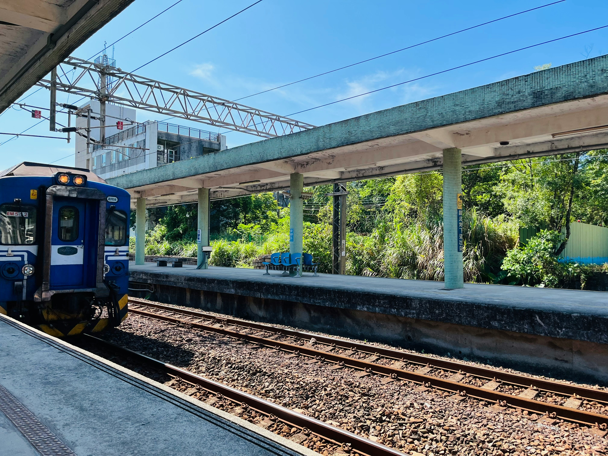
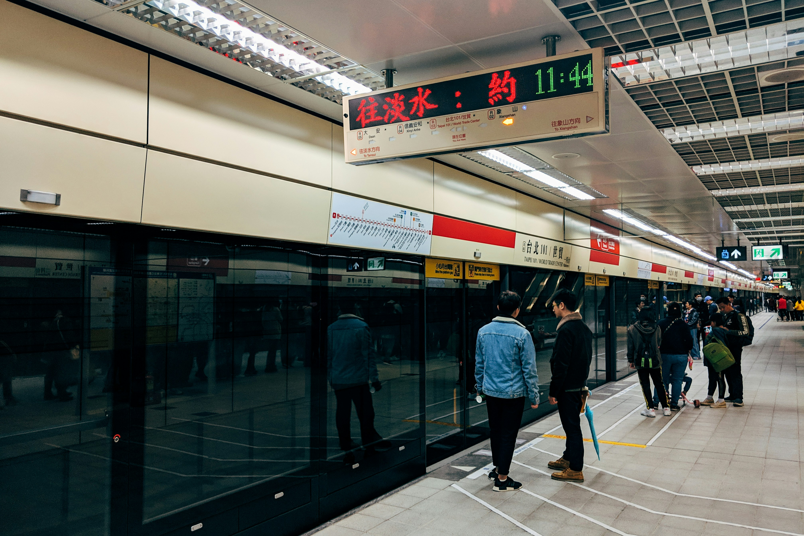

Travel Tips


Best Time to Visit
Spring and autumn are usually the best seasons to visit Taiwan because the weather is more comfortable for sightseeing and outdoor travel.
Transportation
Taiwan has convenient transportation options, including MRT systems in major cities, trains, high speed rail, and buses. These options make it easy for travelers to move around the island.
Payment and Travel Convenience
Travelers should prepare both cash and easy payment cards. Transit cards are especially useful for taking public transportation and making small purchases.
Popular Experiences
Some popular experiences in Taiwan include visiting night markets, exploring temples, enjoying mountain views, and relaxing in local cafés.